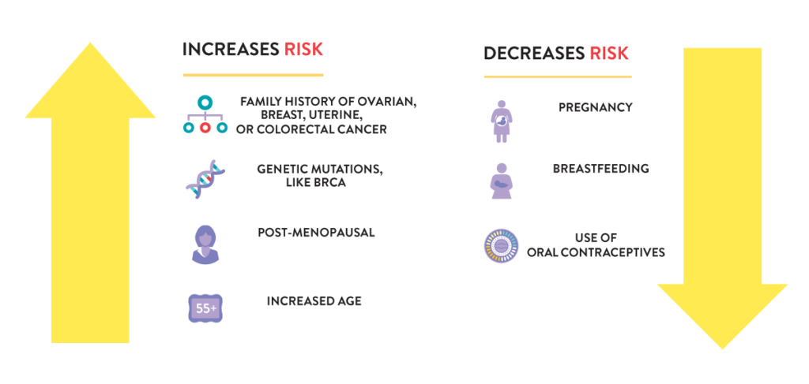
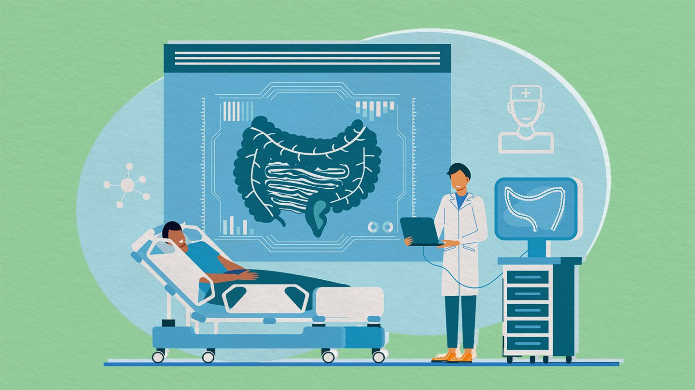

Ovarian cancer is a growth of cells that forms in the ovaries.
The cells multiply quickly and can invade and destroy healthy body tissue.
The female reproductive system contains two ovaries, one on each side of the uterus.
The ovaries — each about the size of an almond — produce eggs (ova) as well as the hormones estrogen and progesterone.
Ovarian cancer treatment usually involves surgery and chemotherapy.
How it happens?
A cell's DNA contains the instructions that tell a cell what to do.
Healthy cells grow and multiply at a set rate, eventually dying at a set time.
The mutations tell the cells to grow and multiply out of control, and they don't die.
The accumulating abnormal cells form a mass (tumor). Cancer cells invade nearby tissues
and can break off from a tumor to spread (metastasize) elsewhere in the body.
What causes
It's not clear what causes ovarian cancer, though doctors have identified things that can increase the risk of the disease.
Doctors know that ovarian cancer begins when cells in or near the ovaries develop changes (mutations) in their DNA. A cell's DNA contains the instructions
that tell the cell what to do. The changes tell the cells to grow and multiply quickly, creating a mass (tumor) of cancer cells. The cancer cells continue living when
healthy cells would die. They can invade nearby tissues and break off from an initial tumor to spread (metastasize) to other parts of the body..
Types of ovarian cancer
The type of cell where the cancer begins determines the type of ovarian cancer you have and helps your doctor determine which treatments are best for you. Ovarian cancer types include:
Epithelial ovarian cancer. This type is the most common. It includes several subtypes, including serous carcinoma and mucinous carcinoma.
Stromal tumors. These rare tumors are usually diagnosed at an earlier stage than other ovarian cancers.
Germ cell tumors. These rare ovarian cancers tend to occur at a younger age
Risk factors
Factors that can increase your risk of ovarian cancer include:
Older age. The risk of ovarian cancer increases as you age. It's most often diagnosed in older adults
Inherited gene changes. A small percentage of ovarian cancers are caused by genes changes you inherit from your parents. The genes that increase the risk of
ovarian cancer include BRCA1 and BRCA2. These genes also increase the risk of breast cancer.
Family history of ovarian cancer. If you have blood relatives who have been diagnosed with ovarian cancer, you may have an increased risk of the disease.
Being overweight or obese. Being overweight or obese increases the risk of ovarian cancer.
Age when menstruation started and ended. Beginning menstruation at an early age or starting menopause at a later age, or both, may increase the risk of ovarian cancer.
how to prevent the risk
Tubal Ligation
Having had a tubal ligation (getting your tubes tied), both ovaries removed, or a hysterectomy (an operation in which the uterus, and sometimes the cervix, is removed).
Conciving
Having given birth.
Birth Control
Having used birth control pills for five or more years
Brest feeding
Breastfeeding. Some studies suggest that women who breastfeed for a year or more may have a modestly reduced risk of ovarian cancer.
Salpingectomy

Prevention 6
Symptoms
upset Stomach
Vaginal bleeding
Abdominal or back pain
Bloating
difficulty eating.
change in Extreme tiredness
take precautions against covid-19
Know about screening
Pep Test
The Pap test does not check for ovarian cancer. The only cancer the Pap test screens for is cervical cancer. Since there is no simple and reliable way to screen for any gynecologic cancer
except for cervical cancer, it is especially important to recognize warning signs, and learn what you can do to reduce your risk.
Here is what you can do— Pay attention to your body, and know what is normal for you.If you notice any changes in your body that are not normal for you and could be a sign of ovarian cancer, talk to your doctor about them.

Screening
is when a test is used to look for a disease before there are any symptoms. Cancer screening tests work when they can find disease early, when treatment works best. Diagnostic tests are used when a person has symptoms. The purpose of diagnostic tests is to find out, or diagnose, what is causing the symptoms. Diagnostic tests also may be used to check a person who is considered at high risk for cancer.
What to eat
diet
Processed meat. According to the World Health Organization (WHO), there is “convincing evidence” that processed meat causes cancer.
Red meat
Alcohol
Salted fish (Chinese style)
Sugary drinks or non-diet soda.
Fast food or processed foods
Before Tratment
Start focusing on healthy foods even before you begin your treatment.
You don't know how it will affect you or what kind of side effects you might have.
That's why it's a good idea to get good nutrition now.
It can help you feel better and your body stay strong.
During Treatment
On good days, eat lots of protein and healthy calories. That will keep your body strong and help repair damage from your treatment.
High-protein foods include:
*Lean meat, chicken, and fish
*Eggs
*Beans, nuts, and seeds
*Cheese, milk, and yogurt
"What a sucess" the marathon that was hosted by the community, for the comunity was a sucess .The turn out was great we really did spread awareness within the comunity.
The support group, has gathered to celabrate life, with our cancer survivors.
Our Mission
The Pink Ladies is a integrated oncology care for women in the community of Kimberly.
The pink ladies is dedicated to ensuring that all people impacted by cancer are empowered by
knowledge, strengthened by action, and sustained by community..
Community Is Stronger Than Cancer
No one can, or should, face cancer alone.
We are here to provide relevant and highly personalized support when and where it is
needed most because Community is Stronger than Cancer.
Our Support of Inclusion and Equity for All
We believe in equity for all, including in health care, and fight every day to ensure that all people are
treated with dignity and respect and have the opportunity to live
healthy and safe lives — physically, mentally, and emotionally.
We commit to listen, educate ourselves, and stand in solidarity with communities of color in these challenging times..